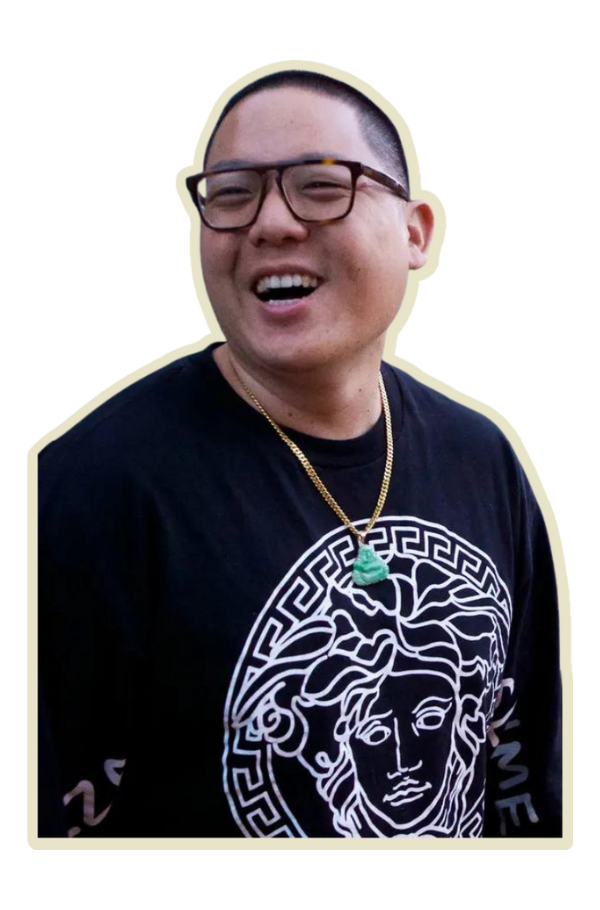
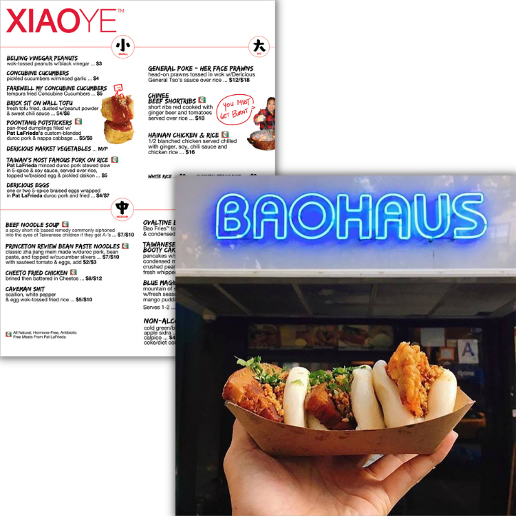
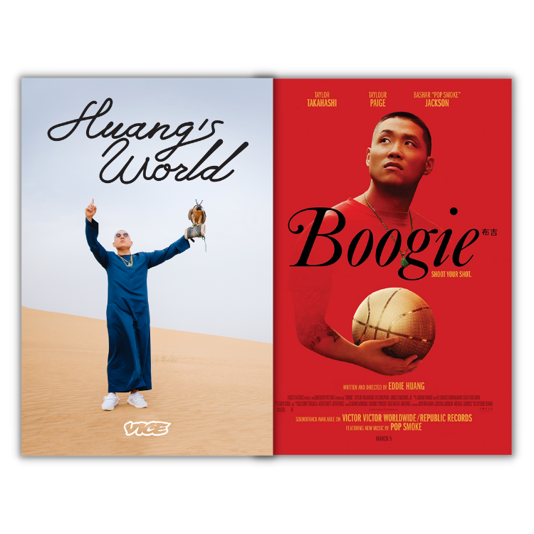
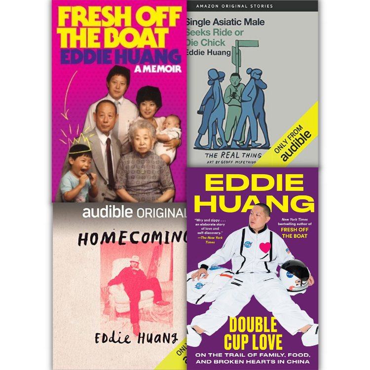
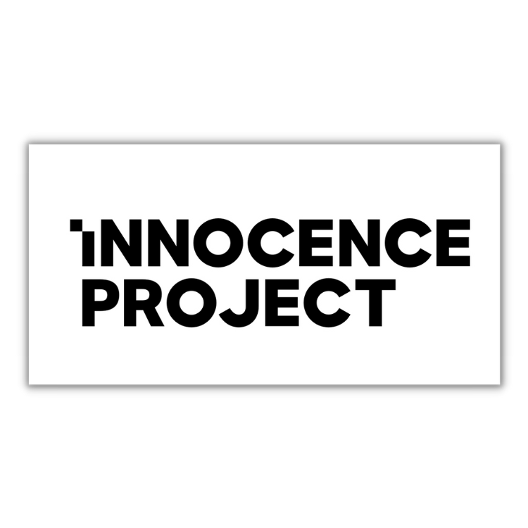

Eddie Huang

Eddie Huang is an American author, chef, restaurateur, food personality, producer, and former attorney.
He was born to Chinese-Taiwanese immigrant parents in Washington, D.C.
Though he started his career as an attorney at a law firm and also worked as a designer for a while, he later decided to follow in his father's footsteps to start a restaurant.
Eddie's first eatery was a bun shop, BaoHaus, in Manhattan. Another restaurant he owned, Xiao Ye, was later closed down due to a controversy.
His first autobiography, Fresh Off the Boat: A Memoir, was turned into a popular TV series named Fresh Off the Boat by ABC.
Eddie has hosted various culinary and lifestyle shows, such as Cheap Bites, Unique Eats, Huang's World, and Snack Off.
He also released the movie basketball movie "Boogie" last 2021, which has been written and directed by him.
Eddie's Projects




Eddie has a deep passion towards food that he got from his Taiwanese heritage. He expressed this passion through his restaurants "Baohaus" and "Xiao Ye".
If you don't know much about Eddie's personality, it is best that you go and watch his works such as "Huang's World" and "Boogie".
One of Eddie's greatest skills is that he can express immigrant experiences and cultural heritage into relatable experiences that everyone can feel for. His books include "Fresh Off the Boat", "Double Cup Love", and two audiobooks.
Something that's not well known about Eddie is that he actually got a JD and passed the New York Bar Exam. He practiced law for a while and volunteered for the Innocence Project.
Learn more about Eddie here.